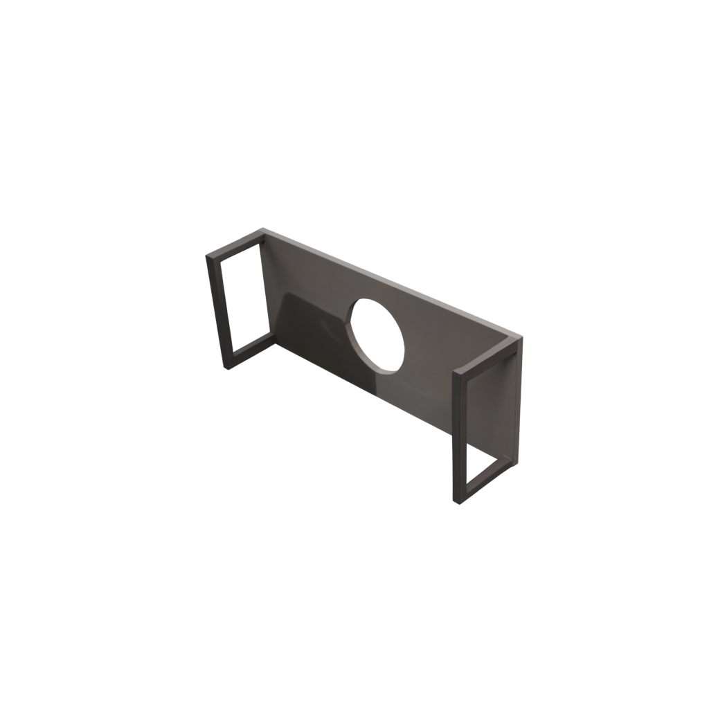

🔧 VIGA SAM3D 工作流程
从图像到 3D Mesh 的完整调用记录
Pipeline 概览
🖼️
输入图像
+ Mask (.npy)
+ Mask (.npy)
→
🧠
SAM3D
推理
推理
→
🔄
坐标变换
(VIGA)
(VIGA)
→
📦
GLB 输出
+ 变换信息
+ 变换信息
环境配置
| 配置项 | 值 |
|---|---|
| 操作系统 | Windows 11 |
| Conda 环境 | sam3d_py311 |
| Python | 3.11.14 |
| PyTorch | 2.8.0+cu128 |
| CUDA | 12.8 |
| GPU | NVIDIA GeForce RTX 5080 (16GB) |
调用命令
# 设置 PYTHONPATH
$env:PYTHONPATH = "."
# 运行 VIGA SAM3D Worker
conda run -n sam3d_py311 python "tools\sam3d\sam3d_worker.py" `
--image "output\test_sam\green_tea_bottle.png" `
--mask "output\test_sam\green_tea_bottle.npy" `
--config "utils\third_party\sam3d\checkpoints\hf\checkpoints\pipeline.yaml" `
--glb "output\viga_test\green_tea_bottle_viga.glb"
输入与输出
📥 输入图像 (带 Mask)

green_tea_bottle.png + green_tea_bottle.npy (1024×771)
📤 Blender 渲染结果
渲染出的 mesh 是扁平的"板子"
输出的 JSON 数据
{
"glb_path": "output/viga_test/green_tea_bottle_viga.glb",
"translation": [0.066, -0.440, 1.458],
"rotation": [0.00007, -0.019, -0.998, -0.062], // 四元数
"scale": [2.31, 2.31, 2.31]
}
VIGA 会输出世界坐标系的变换信息，用于在 Blender 场景中定位物体。
Mesh 结构分析
| 属性 | VIGA 输出 | 原始 SAM3D |
|---|---|---|
| 顶点数 | 118,684 | 118,676 |
| 面数 | 237,360 | 237,344 |
| 尺寸 (X, Y, Z) | 2.35, 1.10, 0.65 | 1.00, 0.23, 0.42 |
⚠️ 问题：Mesh 是扁平的
由于 with_mesh_postprocess=False，SAM3D 输出的是 "billboard" 式的平面 mesh，不是真正的 3D 瓶子形状。
Y 和 Z 维度明显比 X 小很多，证明这是一个近似平面的结构。
为什么 Mesh 是扁的？
在 inference.py 第 144-145 行，mesh 后处理被硬编码禁用：
return self._pipeline.run(
image,
None,
seed,
stage1_only=False,
with_mesh_postprocess=False, # ← 禁用了 mesh 后处理
with_texture_baking=False, # ← 禁用了纹理烘焙
with_layout_postprocess=True,
use_vertex_color=True,
...
)
原因：utils3d 库的 API 与当前版本不兼容，以及缺少 nvdiffrast 的某些函数。
性能统计
| 阶段 | 耗时 |
|---|---|
| 模型加载 | ~22 秒 |
| Sparse Structure 采样 | ~12 秒 |
| Sparse Latent 采样 | ~20 秒 |
| 解码 + 导出 | ~135 秒 |
| 总计 | ~3.5 分钟 |
文件结构
├── tools\sam3d\
│ ├── sam3d_worker.py # VIGA 的 SAM3D 调用脚本
│ ├── sam3_worker.py # SAM3 分割脚本
│ └── bridge.py # MCP 服务桥接
├── utils\third_party\sam3d\
│ ├── notebook\inference.py # SAM3D 封装类
│ └── checkpoints\hf\... # 模型权重
└── output\viga_test\
└── green_tea_bottle_viga.glb # 输出的 GLB
下一步
- 修复
utils3dAPI 兼容性问题 - 启用
with_mesh_postprocess=True - 测试真正的 3D mesh 输出
- 或者使用 Gaussian Splatting 专用渲染器查看结果